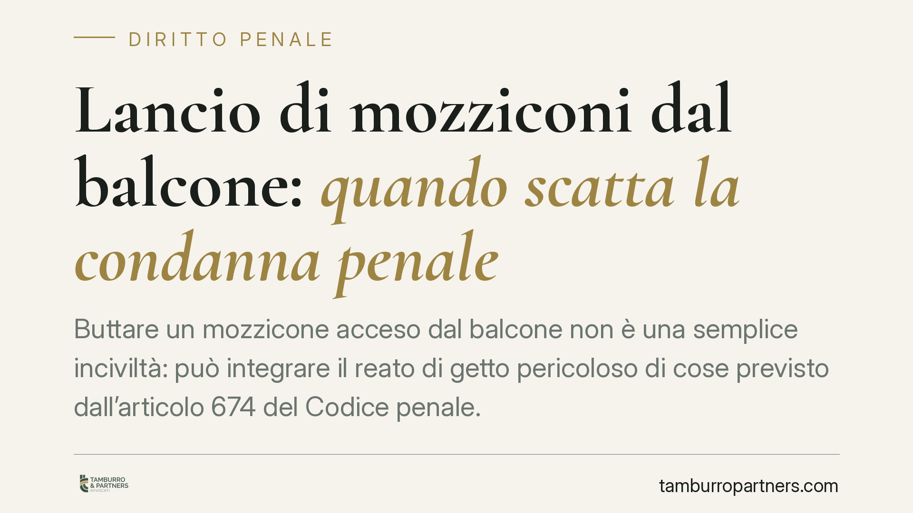

Lancio di mozziconi dal balcone: quando scatta la condanna penale
Buttare un mozzicone acceso dal balcone non è una semplice inciviltà: può integrare il reato di getto pericoloso di cose previsto dall'articolo 674 del Codice penale. La responsabilità è personale del trasgressore, ma la vicenda tocca anche il condominio e l'amministratore. Ecco cosa prevede la norma e come muoversi in concreto tra profilo penale e profilo civile.

Il fatto e perché conta
Il gesto sembra minimo: un mozzicone gettato dal balcone. Sul piano giuridico, però, la condotta può assumere rilievo penale. Il getto di sigarette accese verso spazi altrui o di uso comune espone chi lo compie a responsabilità individuale, a prescindere dalla proprietà dell'immobile o dal ruolo assunto in condominio.
Il tema interessa tre soggetti: il condomino che lancia i mozziconi, il vicino o proprietario che subisce il fastidio o il danno, e l'amministratore, che si trova a dover gestire segnalazioni e conflitti tra condòmini.
Inquadramento normativo
La disposizione di riferimento è l'articolo 674 del Codice penale ("getto pericoloso di cose"). La norma punisce chi getta o versa, in un luogo di pubblico transito o in un luogo privato ma di comune o altrui uso, cose atte a offendere, imbrattare o molestare le persone. La pena prevista è l'arresto fino a un mese o l'ammenda fino a 206 euro: si tratta quindi di una contravvenzione, non di un delitto.
Due precisazioni sono importanti. La prima riguarda la procedibilità: la contravvenzione ex art. 674 c.p. è procedibile d'ufficio. Ciò significa che non occorre una querela di parte: è sufficiente una denuncia o una segnalazione agli organi competenti perché l'autorità giudiziaria possa attivarsi. Va quindi evitata la formula "denuncia-querela", tecnicamente impropria in questo caso.
La seconda riguarda la qualificazione della condotta. Il getto in luogo di pubblico transito o in area condominiale di uso comune rientra con più chiarezza nell'art. 674 c.p. Quando invece il mozzicone finisce sul balcone privato del vicino, occorre una valutazione più attenta: la fattispecie penale del "getto pericoloso" va distinta dal piano civilistico delle immissioni disciplinate dall'articolo 844 del Codice civile (fumi, esalazioni, gettito che superano la normale tollerabilità). La giurisprudenza di legittimità e di merito ha riconosciuto, in tal senso, rilievo a queste condotte su entrambi i binari, penale e civile.
Il doppio binario: penale e civile
I due profili non si escludono. Sul versante penale, la condotta reiterata di getto di mozziconi può integrare la contravvenzione dell'art. 674 c.p., con relativa sanzione. Sul versante civile, il proprietario danneggiato o disturbato può agire per far cessare le immissioni intollerabili ex art. 844 c.c. e chiedere il risarcimento del danno eventualmente patito (per esempio, deterioramento di arredi o rischio d'incendio).
In linea di massima, l'art. 674 c.p. prevale quando la condotta assume connotati di pericolosità o molestia diretta verso persone; l'art. 844 c.c. governa invece i rapporti tra fondi e la tollerabilità delle immissioni nel tempo. Spesso i due piani coesistono e vanno azionati in parallelo.
Implicazioni pratiche
La responsabilità penale è personale: risponde chi materialmente getta i mozziconi, non il condominio in quanto tale né automaticamente il proprietario dell'unità. L'individuazione del responsabile è, di regola, il nodo più delicato.
L'amministratore non ha un obbligo di vigilanza generalizzato sulle condotte individuali, ma è opportuno che intervenga a tutela del decoro e della sicurezza comuni: raccolta delle segnalazioni, richiami formali, eventuale inserimento nel regolamento condominiale di clausole sull'uso dei balconi. In presenza di rischio concreto (per esempio d'incendio), è opportuno che l'amministratore attivi le verifiche del caso.
Cosa fare in concreto
- Documentare: raccogliere prove del fenomeno (foto, video, testimonianze), curando la liceità della raccolta e il rispetto della privacy altrui.
- Segnalare per iscritto: inviare all'amministratore e, se identificabile, al trasgressore una comunicazione formale che descriva i fatti e chieda la cessazione.
- Denunciare: trattandosi di reato procedibile d'ufficio, presentare denuncia agli organi competenti (Forze dell'ordine) allegando la documentazione raccolta.
- Valutare l'azione civile: verificare la sussistenza di immissioni intollerabili ex art. 844 c.c. e l'eventuale danno risarcibile.
- Intervenire sul regolamento: se il fenomeno è ricorrente, proporre in assemblea l'aggiornamento del regolamento condominiale.
Consigliamo di far precedere ogni iniziativa da una valutazione tecnica del caso concreto: la qualificazione della condotta e la scelta del rimedio più efficace dipendono dai dettagli fattuali.
Contributo informativo a cura di Tamburro & Partners - Avv. Giuseppe Tamburro. Non costituisce parere legale.
Ogni condominio ha una storia a sé.
Se gestisci un'amministrazione e vuoi un confronto su una specifica questione condominiale, scrivi allo studio. Ti rispondiamo entro un giorno lavorativo.